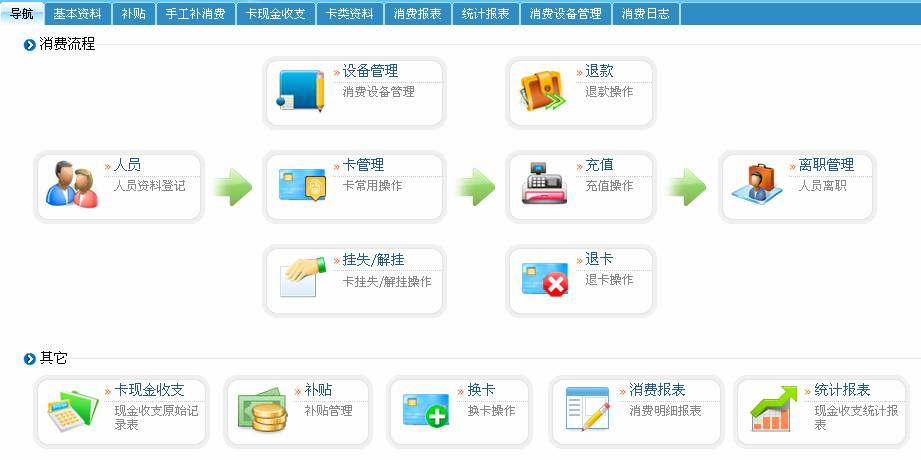

第8章 消费系统
ID 消费系统
本系统采用ZKPos消费管理模块。
消费管理实现了人员消费的信息化管理，并实现人员消费数据采集、数据统计和信息查询过程的自动化，完善消费管理现代化，方便人员消费，方便管理人员统计、查询消费记录；准确地掌握人员消费情况。
消费设备需要与本系统进行数据交换，以方便程序对消费设备进行同步管理，并收集在消费设备中保存的人员消费记录。关于消费设备的设置请参看5.2 设备管理中的5.2.2 新增消费设备。
单击【消费】，进入如下图所示消费导航页面：

用户可以在该页面中进行基本资料设置、卡类资料设置、补贴管理、手工补消费、卡现金收支、消费报表查看、统计报表查看等操作。
 备注：在使用系统的消费功能之前，需先完成两个步骤。一是进入人事系统进行设置：包括设置部门、录入人员、发卡等操作；二是为系统添加设备，并保持联机状态。
备注：在使用系统的消费功能之前，需先完成两个步骤。一是进入人事系统进行设置：包括设置部门、录入人员、发卡等操作；二是为系统添加设备，并保持联机状态。